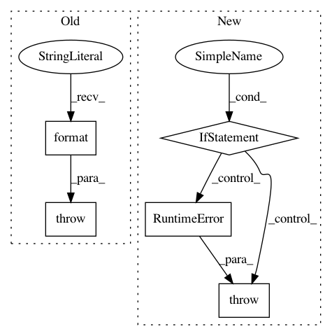

e0b692c96565074d4cb148e6011b2007d0a55348,examples/model_compress/model_speedup.py,,,#,129
Before Change
args.masks_file = "mask_vgg16_cifar10.pth"
apoz_speedup(args.masks_file, args.model_checkpoint)
else:
raise ValueError("unsupported example_name: {}".format(args.example_name))
After Change
parser.add_argument("--masks_file", type=str, default=None, help="the path of the masks file")
args = parser.parse_args()
if args.example_name != "all":
if args.masks_file is not None:
config[args.example_name]["masks_file"] = args.masks_file
if not os.path.exists(config[args.example_name]["masks_file"]):
msg = "{} does not exist! You should specify masks_file correctly, " \
"or use default one which is generated by model_prune_torch.py"
raise RuntimeError(msg.format(config[args.example_name]["masks_file"]))
model_inference(config[args.example_name])
else:
model_inference(config["fpgm"])
model_inference(config["slim"])
model_inference(config["l1filter"])
model_inference(config["apoz"])
In pattern: SUPERPATTERN
Frequency: 3
Non-data size: 5
Instances
Project Name: microsoft/nni
Commit Name: e0b692c96565074d4cb148e6011b2007d0a55348
Time: 2020-03-23
Author: Quanlu.Zhang@microsoft.com
File Name: examples/model_compress/model_speedup.py
Class Name:
Method Name:
Project Name: microsoft/nni
Commit Name: 7d1acfbd939f8e4f5aa9fceb2a47771157b09420
Time: 2020-12-10
Author: hzhua201@gmail.com
File Name: nni/retiarii/operation.py
Class Name: PyTorchOperation
Method Name: to_forward_code
Project Name: ray-project/ray
Commit Name: be8e63d4774207a94fa7d26f9f9e1f7f55f9e664
Time: 2020-08-10
Author: rliaw@berkeley.edu
File Name: python/ray/tune/suggest/suggestion.py
Class Name: Searcher
Method Name: restore_from_dir